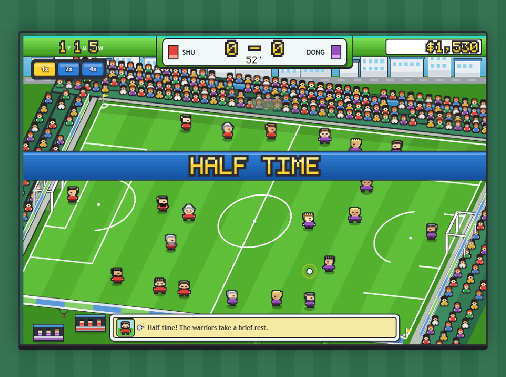
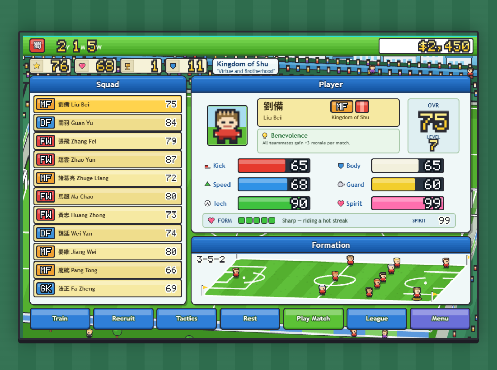
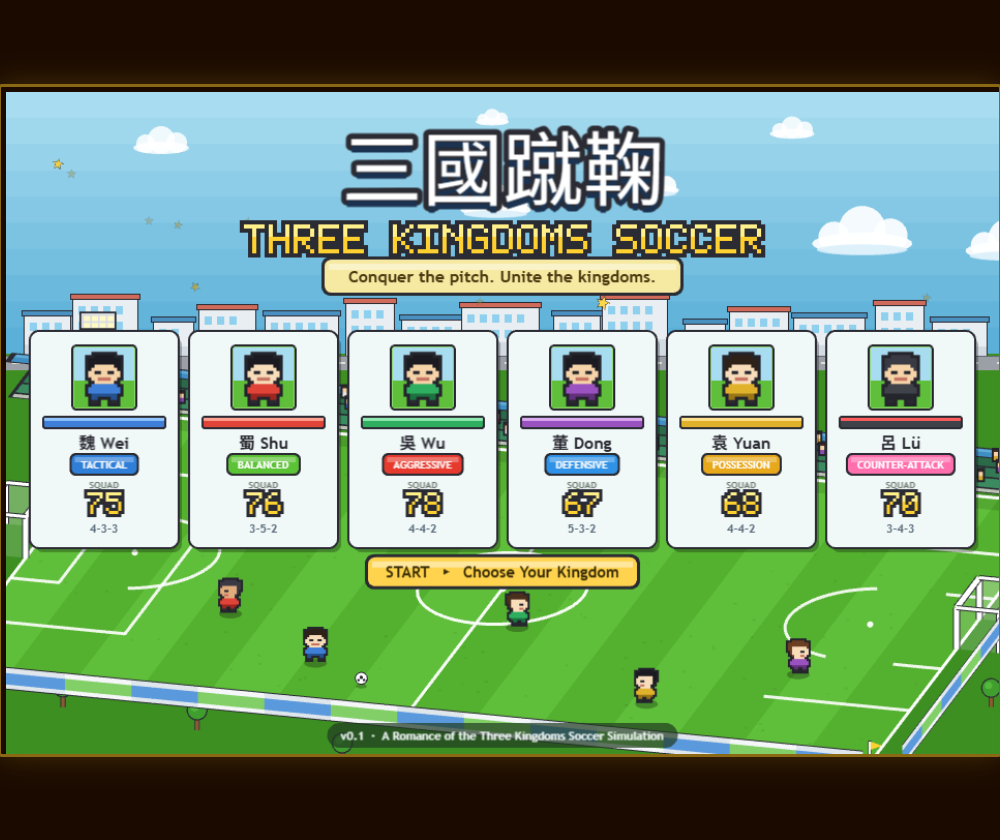
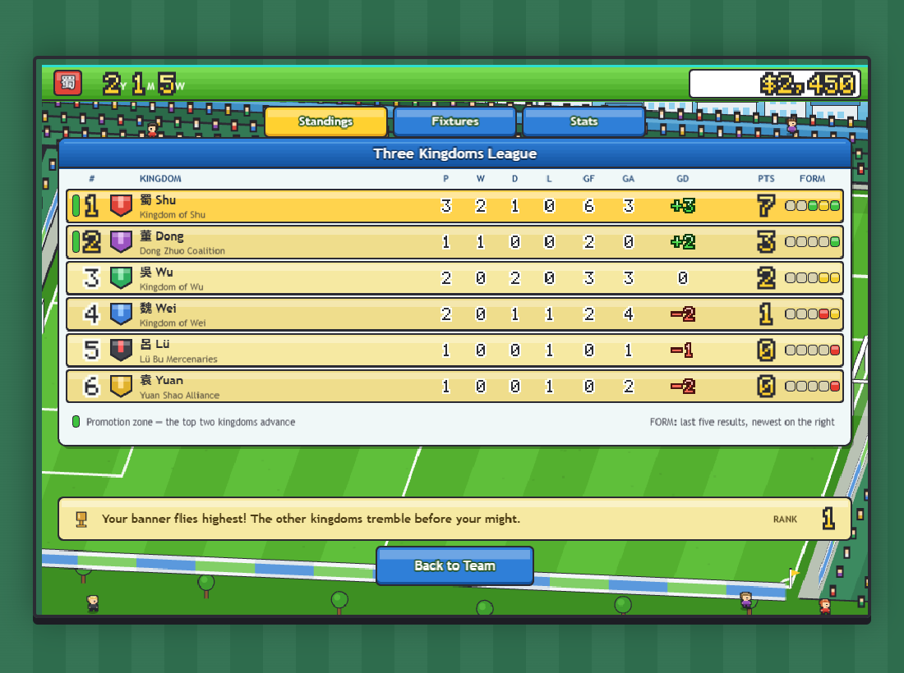
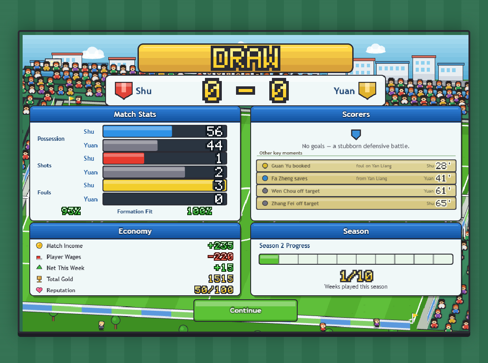
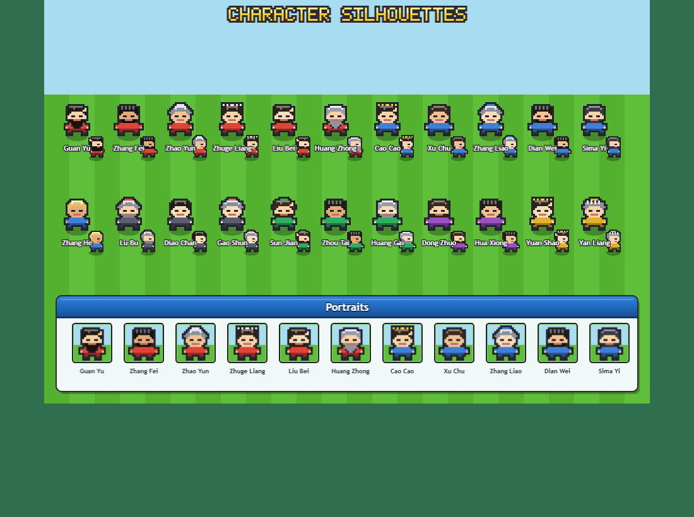

三國蹴鞠 Three Kingdoms Soccer
A Romance of the Three Kingdoms football management sim — Phaser 3, no build step, all art generated in code. Benchmarked against Pocket League Story.
Live build
Blind A/B — latest critic pass
Scored by a critic given both sets of screenshots with no indication of which was which. Set A = Pocket League Story, Set B = ours.
| Dimension | Reference | Ours | Winner |
|---|---|---|---|
| Visual appeal / craft | 8 | 7 | Reference (narrow) |
| Clarity | 6 | 8 | Ours |
| Personality / charm | 9 | 6 | Reference |
| Character art | 8 | 4 | Reference |
| Environment richness | 9 | 4 | Reference |
| UI polish | 7 | 7 | Tie |
| Information density | 7 | 8 | Ours |
| Desire to keep playing | 8 | 5 | Reference |
Status: reference still wins overall. The three losing dimensions were all traced to two root causes: every character was one sprite recoloured, and the crowd was 2×3-pixel blobs. Both have since been rebuilt (see v0.6 below) and are pending a re-score.
Side by side
The reference screenshots are Pocket League Story, © Kairosoft. They were fetched locally for art-direction comparison and are deliberately not committed, so these two panels are empty in a fresh clone. Everything on the right is ours.
Reference — match view

Ours — match view

Reference — player select

Ours — squad management

Current screens




Build log
-
v0.10 — Smooth ball motion (current)
- The ball looked right but did not move right. Rather than guess, a harness recorded its screen position every frame and flagged any frame moving far more than its neighbours — normalised per millisecond, so a long frame is not mistaken for a teleport, and attributed to whichever method last touched the ball
- That found it immediately: every pass ended with a 53–77px teleport in a single frame. Passes aimed at where the receiver stood when the ball was struck, but receivers keep running — about 0.15 of the pitch during a pass — so the ball landed behind him, hung for one frame, then snapped onto his feet when possession changed
- Passes now track the receiver's live position, blended in gradually so an early frame cannot yank the ball sideways, and they aim at the point the ball will actually sit rather than his centre
- Shots were worse: the engine names the scorer, so he is staged near the box, and the ball was teleported along with him — usually from midfield, over 400px in one frame. It is played to him as a through ball now, which is smooth and better drama besides: goals arrive from a pass instead of materialising
- Restarts moved the ball up to 861px instantly. They fade it out, move it, fade it in — a jump nobody can see is not a jump
- Six more, each measured rather than assumed: handovers relying on a per-frame chase whose exponential approach front-loads its motion (68px first frame); that chase fighting the tweens because it was missing an
inFlightcheck; a 40ms hole at kickoff where the chase dragged the ball off the centre spot (171px); interrupting an arcing ball dropping it 29px out of the sky; a scripted attack nudging the carrier after handing him the ball; and shots easing in, so the frames around the goal line were the quickest in the whole shot - Result over 20 seconds of play: from 14 jerks and an 861px single-frame move, to 0–2 jerks and nothing above ~50px. Most runs are now completely clean
- Also caught by the harness, intermittently: players left permanently tilted, because
killTweensOfdoes not runonComplete, so a celebration hop landing mid-kick skipped the reset that straightens them up
-
v0.9 — The ball became a ball
- The football was
add.circle(x, y, 6, 0xffffff)— a white dot that read as a rendering artefact, and with no features on it a 30-yard pass looked like a dot sliding across the grass Ball.jsnow generates a real panelled football by sampling a sphere: take each pixel's surface normal, un-rotate it, and darken it if it lands on one of the 12 pentagon centres of a truncated icosahedron. Twelve rotation phases bake into a frame strip, so spin is a frame lookup rather than per-frame drawing- Spin is driven by ground covered rather than a timer, so it accelerates off a strike and dies away as the ball settles — about 2.8 rotations a second in ordinary play
- Strikes have weight now: the ball squashes along its travel, a white impact star pops, turf scuffs up, a ghost trail follows the ball while it is genuinely flying, and it kicks dust on landing
- Players got a kick pose — leg swung through with the boot clear of the turf, plus the whole body leaning over the planted foot. At 32px a single frame change is easy to miss; a body tipping over is not
- The gold halo that used to ring the ball is gone. It existed because a white dot was unfindable, and it fought the new panels for the same 16px. A thin white ring on the turf does the job instead — and stays useful with the ball in the air above it
- Tuning notes worth keeping: the geometrically correct pentagon radius produces a dark ball with white speckles at this resolution, because a chunky pixel near the rim over-claims its slice of the sphere. And a packed frame strip needs a transparent gutter plus point sampling, or every frame bleeds into its neighbour
- The football was
-
v0.8 — Progress persists
- The campaign lived only in Phaser's in-memory registry, so a refresh threw away the squad, gold, season and trophies.
SaveGame.jsnow mirrors it tolocalStorage - Autosave hangs off the registry's
changedata-gameStateevent with a 400 ms debounce, so every existing and future write site is covered without touching it — plus apagehideflush for tabs closed inside the debounce window - Only a whitelist of fields is written, so per-scene scratch data never leaks into the save; unavailable storage, quota errors, corrupt JSON and version mismatches all degrade instead of crashing
- The menu opens on a Welcome Back card showing kingdom, season, week, gold, cups and squad size — Continue or New Game, the latter behind a confirm because it deletes the save
- Verified with real mouse clicks in a browser: a marked campaign (gold 1234, week 4, season 2, two results, a bumped player stat) round-tripped field for field; a played match persisted Shu 0–0 Yuan with week 3 / gold 1515; New Game left no trace of the old kingdom
- Then it failed in production while working locally — and the save code was innocent. An early deploy had sent
immutable, max-age=31536000for the module directory, so returning browsers had all 17 files pinned for a year and were executing amain.jsfrom beforeSaveGameexisted. Fetching the same URLs directly returned the new code, which is what makes this so easy to misread. A revalidating header cannot evict an entry the browser was already told to keep, so the directory was renamedsrc/→app/: new URLs, no cache entries
- The campaign lived only in Phaser's in-memory registry, so a refresh threw away the squad, gold, season and trophies.
-
v0.7 — The match became a match
- Players used to jitter inside their formation slots.
MatchDayScenenow runs a per-frame possession model over the engine result: possession, carrier, phase, passes, interceptions, pressing and set-piece restarts - The whole shape slides with the ball, scaled per player so it stretches rather than translating rigidly; the engine still owns the scoreline
- Measured before/after: ball travel 0.06 → 1.02 of the pitch, 13 possession changes, 8 distinct carriers, average outfielder covering 0.33 of the pitch instead of 0.09
- Two traps found the hard way: loose-ball pickup running during a pass instantly recollected the ball, and name tags anchored once left floating on empty grass once players actually moved
- Shipped live on Vercel; module responses forced to revalidate after a deploy served correct code while browsers kept executing the previous build from cache
- Players used to jitter inside their formation slots.
-
v0.6 — Character identity & crowd
- Silhouette features added to the chibi generator: tapering beards, plumed helmets with widened brims, spiked coronets, heavy builds — applied per named warrior, so Guan Yu, Lü Bu, Zhang Fei and Cao Cao are recognisable at 34px
- Crowd rebuilt from 2×3px blobs into outlined 7×9 people with head, hair, shoulders and arms, plus scattered empty seats so attendance reads
- Stat bars gained a dark value well so numerals read on any fill colour
- Fixed a real bug: pixel-font shadows were declared as
0x00000055, which Phaser reads as opaque navy — every gold numeral carried a blue fringe
-
Critic pass 3 — blind A/B
- Reference won 62–49. Decisive losses on character art and environment richness
- Root causes named: one sprite recoloured six times; placeholder crowd; match screen shows a formation, not a moment
-
v0.5 — Inhabited world
- Replaced three duplicate wallpaper backgrounds with a shared
stadiumBackdrop: skyline, road, trees, floodlights, terraces, crowd, plus chibi figures strolling through the gaps - Terraces wrap behind both goals; near-side hoarding made symmetric; dugouts added
- League panel height made data-driven, form pips added; scorers panel filled with secondary match events; result callout given rounded corners
- Replaced three duplicate wallpaper backgrounds with a shared
-
Critic pass 2
- “Ours is a UI laid over wallpaper; theirs is an inhabited place with a UI on top.”
- Also caught:
UI.panelassigned.body, colliding with Phaser's physics slot and crashing on teardown
-
v0.4 — Art direction rebuild
- Checked the actual reference screenshots and found the art direction inverted: we were dark/flat/circles, it is bright/isometric/chibi
- Built a new art layer:
Palette,PixelFont(chunky outlined bitmap glyphs),Chibi(procedural characters),UI(white panels with blue title bars, chips, badges, stat bars),IsoWorld(sheared-projection pitch, stands, crowd, town) - All five scenes rebuilt onto it
-
Critic pass 1 — “Potemkin village”
- Traits and formations were printed in the UI but ignored by the match engine; no season arc, no economy
-
v0.3 — Decisions matter
- Match engine rewritten: formation-weighted zone strength, 60+ traits with real effects
- Season structure, weekly income vs wages, facilities, 10 random events with real consequences
-
v0.1–0.2 — Foundation
- Six kingdoms, 66 warriors, match simulation, five scenes, procedural audio